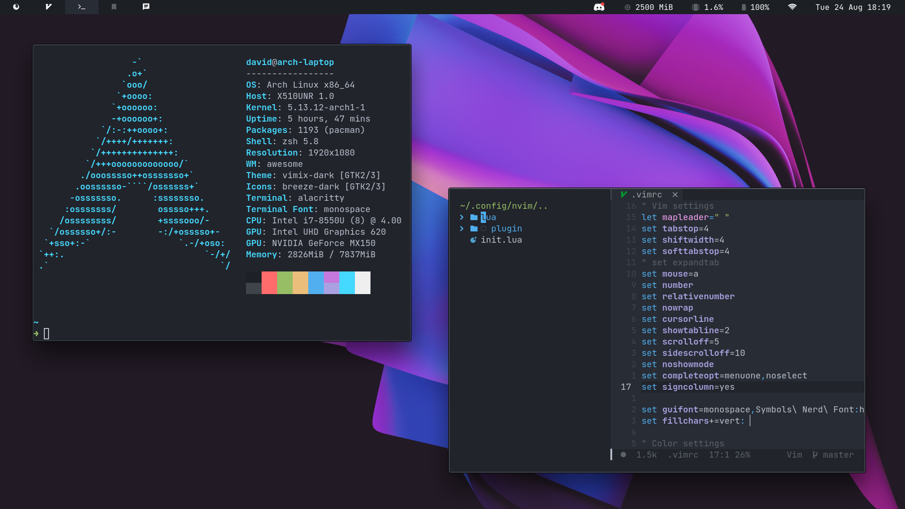

Linux And Its Distros

What is linux
Distro
A Distro is a distribution of linux that uses the kernel to make an operating system, distros can either be indpendent or based on another distro; eg... ubutu is based on debian, endevour is based on arch
Linux
Linux is an open source kernel made by linus torvalds that serves as the foundation for many linux distros; it is made to mimic unix like systems variably. It is robust, stable and reliable, it distros are the most used operating systems, used in telecommunications, buiness, embeded systems, servers and etc
Kernel
The kernel is the key of an os, it is responsible for preveting and mitigating conflicts between difference processes, it facilitates interaction between hardware and software, and maangers all hardware resources, such as memory and CPU cache